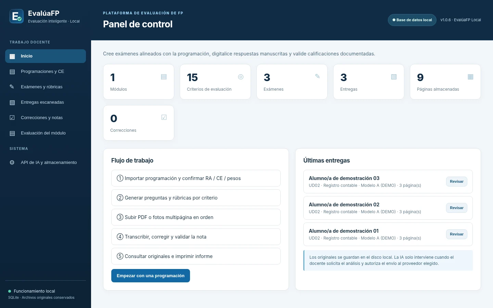
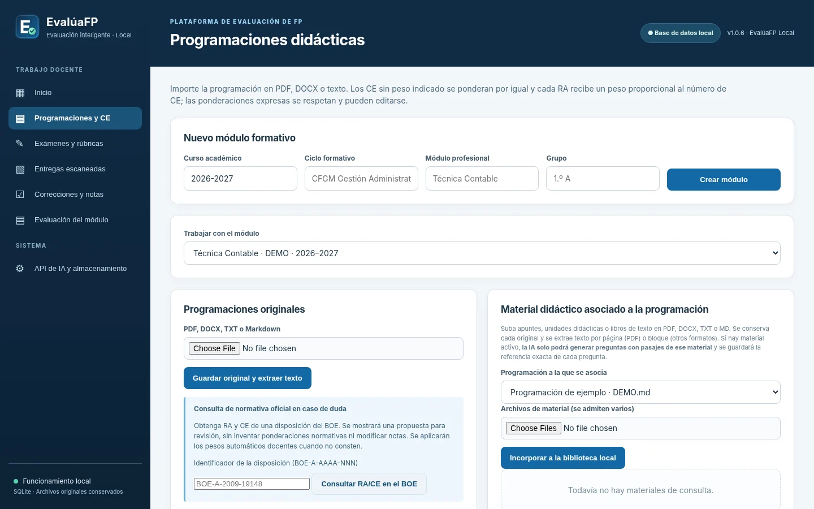

▤
La programación, primero
Importa PDF o DOCX, identifica RA y CE y revisa las propuestas. Cuando falta información, consulta el currículo oficial del BOE y conserva la procedencia de cada dato.
Normativa y programación diferenciadasDe la programación didáctica al informe de calificación: genera exámenes, revisa las correcciones con IA y consolida las notas por resultados de aprendizaje y criterios de evaluación.
✓ Datos almacenados en tu equipo · ✓ Sin suscripción a la aplicación

TODO EN UN MISMO LUGAR
EvalúaFP Canarias conecta los instrumentos con los criterios curriculares, pero mantiene la decisión académica en manos del profesorado.
Importa PDF o DOCX, identifica RA y CE y revisa las propuestas. Cuando falta información, consulta el currículo oficial del BOE y conserva la procedencia de cada dato.
Normativa y programación diferenciadasTest, desarrollo y problemas prácticos. Dificultad baja, media o alta; varios modelos sin preguntas repetidas y banco mínimo triple.
Importa PDF y fotografías consecutivas, incluso por lotes. Visualiza los originales y detecta respuestas que continúan en otra página.
Transcripción asistida por IA, rúbricas por pregunta y propuesta de nota. El docente revisa y valida antes del cierre.
Registra exámenes, portfolios, prácticas y notas manuales o CSV como evidencias. Consolida las calificaciones por CE, RA, unidad, trimestre y módulo, y exporta para Excel y Additio.
Sin confundir pruebas con criteriosLA APLICACIÓN, POR DENTRO
Capturas heredadas de la aplicación general EvalúaFP; el selector exclusivo de Canarias se incorpora a esta edición con un grupo y documentos exclusivamente ficticios.

PONDERACIÓN INTELIGENTE
EvalúaFP propone automáticamente el mismo peso global para cada criterio. El peso de cada RA depende del número de criterios que contenga. Si la programación dispone otra ponderación, se respeta; el docente puede modificarla posteriormente.
Las ponderaciones de formación en empresa y las contradicciones de la programación se revisan por separado. No se altera ninguna calificación sin confirmación.
Modifica cuántos CE tiene cada resultado:
CÓMO FUNCIONA
Programación y, si lo deseas, apuntes y materiales didácticos.
Selecciona CE, dificultad, número de modelos y tipos de preguntas.
Sube exámenes manuscritos y revisa cada propuesta de la IA.
Integra evidencias, valida la nota y exporta RA y CE.
BETA.4 · CANDIDATO AUDITADO · 21/11/2026
391 pruebas automatizadas superadas y cuatro compilaciones con autoprueba de arranque correcta. Candidatos sin firma digital, pendientes de validación visual en equipos reales. Código integrado en main.
EXE portable dentro de ZIP. No necesita instalar Python. Requiere un entorno gráfico y WebView2 compatible.
55,1 MB · Autoprueba correctaPaquete TAR.GZ compilado en Ubuntu 22.04. Requiere un entorno gráfico y bibliotecas compatibles.
276,8 MB · Autoprueba correctaAplicación APP para equipos Mac con procesador Intel. Sin notarización de Apple.
54,3 MB · Autoprueba correctaAplicación APP para equipos Mac con chips de la serie M. Sin notarización de Apple.
52,3 MB · Autoprueba correctaInicia sesión en GitHub para descargar. Extrae el ZIP de GitHub y después el package interior (ZIP o TAR.GZ). Comprueba el archivo SHA-256 incluido. Estos artefactos temporales están disponibles hasta el 21 de diciembre de 2026. Prueba primero con datos ficticios y guarda una copia externa de tus datos actuales. Resultados de la compilación · Código fuente y documentación.
Identificador de compilación: e317fd88 · Conserva la versión interna 1.2.10-AG-CN-beta.4. Las versiones anteriores no se identifican con este candidato.
TUS DATOS VIAJAN CONTIGO
SQLite y los originales se guardan localmente. El modo USB permite elegir las carpetas de datos y de copias de seguridad, y protege la clave de la API con cifrado y contraseña maestra.
Para transportar información real del alumnado se recomienda utilizar un dispositivo cifrado y conservar copias externas. La clave API protegida no implica que todos los documentos estén cifrados.
ANTES DE EMPEZAR
El proyecto se ofrece gratuitamente. Las API externas de inteligencia artificial, como OpenAI o servicios compatibles, pueden tener costes independientes. El programa puede gestionar archivos y calificaciones locales sin utilizarlas.
Ya hay paquetes portátiles de prueba para Windows x64, Linux x64 y macOS Intel/Apple Silicon en GitHub Actions. Abre la sección Descargas, inicia sesión en GitHub y baja el artefacto de tu sistema. Son betas aún sin firma y no equivalen a una instalación validada en todos los equipos.
No. La IA propone transcripciones, correspondencias curriculares y calificaciones. El docente revisa las evidencias y valida los resultados antes del cierre.
Genera archivos Excel y CSV/TSV de configuración curricular y calificaciones por RA/CE. El formato exacto de importación debe comprobarse con la configuración de Additio disponible en cada centro.
Los PDF e imágenes originales se conservan en el almacenamiento local y sus metadatos en SQLite. El docente puede configurar carpetas y respaldos, incluso en USB.
PARA QUIEN ENSEÑA, CORRIGE Y EVALÚA
Explora EvalúaFP Canarias · Administración y Gestión, consulta la documentación y participa en el desarrollo de una herramienta pensada para la realidad de la Formación Profesional.